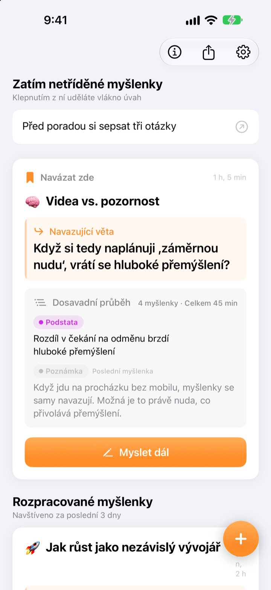
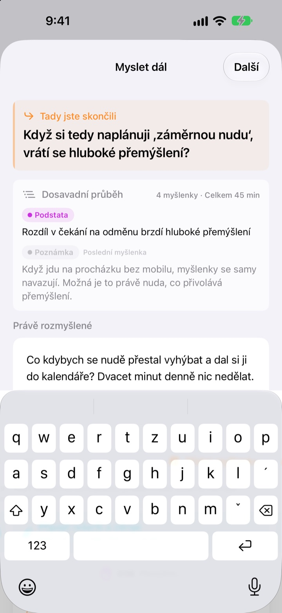
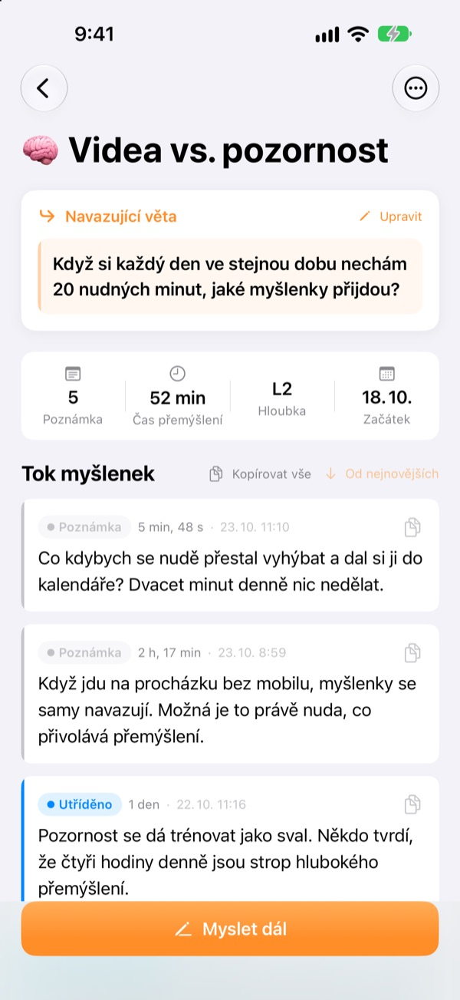
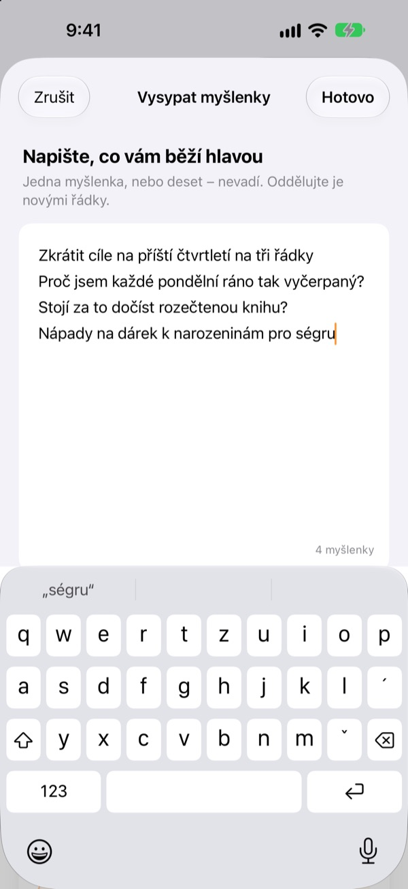

Včerejší nedokončená myšlenka
pokračuje dnes tam, kde přestala
Když přestanete přemýšlet, nechte jeden řádek, na který navážete. Až aplikaci znovu otevřete, bude čekat nahoře.
Všechny funkce jsou zdarma. Bez účtu, vše zůstává ve vašem zařízení.

Vyzkoušejte navazující větu
Napište myšlenku a nechte větu, na kterou příště navážete. Postup je stejný jako v aplikaci.
Kde jsem to vlastně skončil?
Otevřete poznámku z minulého týdne a najdete v ní pár závěrů, ale ne otázku, kterou jste chtěli řešit dál. A tak začínáte od nuly. ThinkFlow vás při zastavení nechá tu další otázku zapsat, takže po návratu začnete rovnou od ní.
Navazující věta čeká nahoře
Ukončete přemýšlení jediným řádkem: otázkou, na kterou navážete. Po návratu najdete tu větu, dosavadní podstatu i poslední myšlenku na jedné kartě. Nic nemusíte skládat dohromady.
Větu uvidíte i ve widgetu na ploše a během přemýšlení běží čas na zamčené obrazovce a v Dynamic Islandu.

Od poznámky k podstatě
Posouvejte každou myšlenku čtyřmi úrovněmi: poznámka, utříděno, podstata a shrnutí. Na první pohled vidíte, jak daleko dozrála.
Co jste vyhledali nebo se zeptali, připojíte jako podklad, odděleně od vlastních myšlenek.

Nejdřív si vyprázdněte hlavu
Napište všechno, co vám běží hlavou, jeden řádek na myšlenku, a vyberte tu, na které chcete pracovat teď. Stane se z ní vlákno, zbytek počká na úvodní obrazovce, dokud na něj neklepnete.
Myšlenky, kterých jste se déle než tři dny nedotkli, se sejdou v části Myšlenky k oživení.

Začněte ve třech krocích
- 1
Vysypte myšlenky
Jeden řádek na myšlenku, pak vyberte tu, kterou chcete rozvíjet.
- 2
Přemýšlejte dál
Každý nový nápad přidejte zvlášť, později se snáz zpracuje.
- 3
Nechte větu a zavřete
Příště začnete právě od ní.
Úroveň zpracování
- Poznámka
- Syrová myšlenka
- Utříděno
- Jednou utříděno
- Podstata
- Jen podstata
- Shrnutí
- Závěrečné shrnutí
Úroveň změníte klepnutím na štítek vedle myšlenky. Podstata a shrnutí se po návratu ukážou na kartě jako první.
Navazující věta čeká nahoře
Musím navazující větu napsat?
Pokud jste něco přidali, ano: obrazovka Myslet dál se zavře, až necháte další řádek. Pokud jste nic nenapsali, prostě ji zavřete. Trik je přestat, dokud ještě máte co říct, ne až když se zaseknete.
Co jsou Myšlenky k oživení?
Vlákna, která jste neotevřeli déle než tři dny, se shromáždí zvlášť na úvodní obrazovce. I skoro zapomenutá myšlenka tak může pokračovat od své navazující věty.
Jak nahlásit chybu nebo něco navrhnout?
Použijte Odeslat zpětnou vazbu v nastavení aplikace, napište na adresu níže nebo založte issue na github.com/M1zz/ThinkFlow/issues. Uvítáme cokoli.
Je opravdu všechno zdarma?
Ano. Všechny funkce jsou zdarma, bez reklam a bez účtu. „Podpořit vývojáře“ v nastavení je zcela dobrovolné a nic dalšího neodemyká.
Dotazy nebo náměty? Napište na leeo@kakao.com.